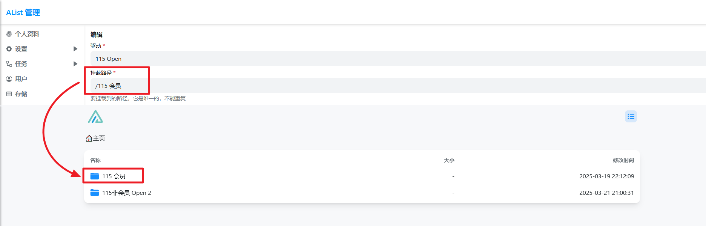

用 OpenList 搭一条网盘自动化链：从搜索到分发不再手动搬运
每周要整理几十个网盘的几万个文件，以前先下载再分类再上传得三步，现在一条链搞定。这篇讲具体怎么把 OpenList 嵌进我的资源整理工作流。
每周一我要做一件事：把过去一周收集的软件资源从七八个网盘汇总、去重、备份、然后生成对外分发链接。以前这条链分三步，每步都要手动下载再上传——云盘到本地再到另一个云盘，来回占带宽、花时间。朋友推荐的 OpenList官网 把它插进流程中间当枢纽，现在这条链基本跑通了，分享一下具体怎么接的。
旧流程卡在哪
我挂的盘比较杂：国内有夸克、阿里云盘、115，海外有 OneDrive 全球版和 Google Drive。以前的操作路径是：
- 挨个登每个网盘，用各自的搜索功能找要整理的文件
- 把筛选出来的文件下载到本地临时目录
- 用本地脚本校验文件、去重、生成清单
- 再上传到备份盘和分发盘
痛点很具体：网盘搜出来的结果各自排序，跨盘重名文件要肉眼比对；国内盘下完再传海外盘，中间还得转个代理；每个盘都要记 Cookie 或令牌，过期了分别续。整个流程光手动搬运就要两小时。
新流程：把 OpenList 当网盘操作系统
从官方下载下来装好的 OpenList 本质上就是一个网盘聚合层——它把各种网盘的接口封装成统一的文件树，你在一个界面里操作，背后帮你路由到对应盘。我把它插在流程的中间，整个链变成了这样：
源头网盘 → OpenList 统一挂载 → 全盘搜索定位 → 跨盘复制备份 → 生成直链分发
每一步讲一下具体怎么接。
挂载：国内外盘一锅端
OpenList 支持的驱动非常全，常见网盘基本都覆盖。我在后台「添加存储」里挨个挂了九个盘，其中两个海外盘的 OAuth 授权值得单独说——OneDrive 和 Google Drive 都是走 OAuth，比 Cookie 稳定，但区域和网络是两个必须先搞对的前提。
OneDrive 驱动里按账号类型选区域，全球版、世纪互联（CN）、德国、美国四个选项各走各的接口，选错区域授权必然失败。我有一个世纪互联的商业版账号，一开始随手选了全球版，授权页能打开但回跳就报错，切到 CN 一次过。Google Drive 那边要在谷歌云控制台建 OAuth 应用，团队共享盘还得额外填根目录 ID，官方驱动文档有十几张截图照着点就行。
网络层面反过来：海外盘的接口国内机器直连大概率超时，搭建机要么放海外 VPS，要么配好代理中转；但 Terabox 这种反而限制海外 IP 之外的访问，国内机器才能挂。方向别搞反。
挂完之后所有盘出现在同一个文件树里，顶层目录按驱动名分，点进去就是各盘的原始结构。OpenList 有个别名聚合功能，可以把几个盘的目录挂进同一个虚拟路径，我没开——保持原始结构反而方便排查来源。

搜索：先建索引再 Ctrl+K
没开索引之前按 Ctrl + K 会直接弹出「Search not available」，这是我踩的第一个坑。OpenList 的搜索默认关闭，要手动建索引才会生效。后台进「索引」页，选一种类型、点「构建索引」，等它跑完。
索引类型有四种，中文文件名多的库我选的是 database 非全文搜索——不分词、逐字匹配，中文准确，速度虽然比全文搜索稍慢但对我的场景够用。英文文件名多的盘切全文搜索更快。如果以后追求极致中文模糊匹配可以换 meilisearch，但得额外跑一个服务，具体选型和配置细节可以翻 OpenList文档，目前没必要。

索引维护也省心：开了「自动更新索引」之后，文件增删会增量同步，不用手动重建。唯一的故障是 SQLite 用户高频写时可能碰到 database is locked，关掉自动更新或者换 MySQL 就能根治。
跨盘复制：不再绕本地
这步是整个流程省时间最多的地方。OpenList 的跨盘复制直接走网盘接口，不会绕本地中转——也就是说从阿里云盘复制到 OneDrive，数据在云端完成同步，你的电脑只发起请求。
我在源头盘的目录里选中本周要整理的文件，右键复制，切到备份盘对应目录粘贴，OpenList 在后台排队处理。复制完成后文件自动出现在备份盘，元数据和原始目录结构都保留。以前手动下载再上传的那一步完全跳过了。
分发盘那边我用的是直链模式：OpenList 给每个文件生成固定直链，我把链接丢给下游脚本生成清单就行，不用单独上传。
SSO：家人免密码
一个额外的效率提升是 SSO 单点登录。我把站点接入了 GitHub OAuth，家人访问的时候点「使用 GitHub 登录」就进来了，不用记站内密码。配置步骤很标准：在 GitHub 开发者设置里建一个 OAuth App，回调地址填 OpenList 的 SSO 回调路径，把 Client ID 和 Secret 粘回后台就行。
管理员账号我还是用密码加 2FA，双轨并存——安全和方便都不丢。
效果与边界
这条流程跑了一个月，实际变化：
- 搜索定位从挨个登盘找变成全盘
Ctrl + K，少了七八次手动打开网页 - 跨盘备份不再绕本地，省了两次全量下载上传（我的带宽是上行 30M，几个 TB 的文件以前要跑一晚上）
- 令牌续期从每个盘单独处理变成只维护 OpenList 一处
但有两个边界要提前说清楚。第一，搭建机的网络环境是硬前提——海外盘挂不上不是配置错了，是网络不通。第二，高频写场景下 SQLite 会锁库，文件量上来之后得换 MySQL。还有一点，索引数据跟站点数据分开备份，内置备份不含索引，重建就行，不用为它做复杂备份。
这套流程不是为所有场景设计的——如果你只挂一两个盘、文件量不大，直接用网盘客户端就够了。但网盘数量上了五六个、文件上了万级之后，OpenList 当枢纽的价值就出来了：统一入口、不绕本地、自动化链条。我现在每周整理的时间从两小时降到二十分钟左右，主要就是跑一遍脚本生成分发清单那点事。
如果你也在攒多个网盘，别再手动搬运了——把 OpenList 插进中间当枢纽，这条链值得搭。我的部署和配置参考资料在三个仓库都有备份，GitHub 是主仓库，国内网络可以直接去 Gitee 或 GitCode 拿。